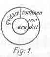
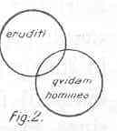

Kant: AA XVI, L §. 294-296. IX 102-104. §. 21-22. ... , Seite 637 |
|||||||
Zeile:
|
Text:
|
|
|
||||
| 01 | Der Modus. Problematisch, Assertorisch, Apodictisch. | ||||||
| 02 | Es ist von großer Wichtigkeit zu wissen, welche sätze problematisch | ||||||
| 03 | Ausgedrükt, ich hinreichend brauchen kann. e. g. Es kann ein künftig | ||||||
| 04 | Leben seyn. Denn problematische Sätze sind ofters unstrittig, obgleich | ||||||
| 05 | assertorische Einwürfen ausgesetzt sind. | ||||||
| 06 | Imgleichen assertorische, ob sie gleich nicht apodictisch sind. z. E. | ||||||
| 07 | Empirische Sätze. | ||||||
| 08 | Problematische Sätze als Gründe anderer Warheiten heissen Hypothesen. | ||||||
| 10 | Der Satz: qvidam homines non sunt eruditi kan durch fig. 1. ausgedrükt | ||||||
| 11 | werden (non omnes). | ||||||
| 12 | Der unendliche Satz: qvidam noneruditi |   |
|||||
| 13 | durch fig. 2 (qvidam non). Der Begrif | ||||||
| 14 | der Gelehrten ist in Ansehung der Menschen | ||||||
| 15 | eingeschränkt, d. i. enger als derselbe letztere. | ||||||
| 16 | Daß die gelehrte und Nichtgelehrte alle zusammen alle Menschen | ||||||
| 17 | ausmachen, mithin die Menschen durch die Nicht Gelehrte, aber mit | ||||||
| 18 | einer Einschränkung gedacht werden. | ||||||
| 19 | Die Gelehrte werden entweder betrachtet, als wenn sie alle unter | ||||||
| 20 | dem Begrif der Menschen stehen, aber nur als ein Theil ihrer sphaere | ||||||
| 21 | (g der andere Theil ist nicht gelehrt ). Der B Oder Die M ein Theil | ||||||
| 22 | nur der Menschen wird betrachtet, als wenn er unter mit dem Begrif | ||||||
| 23 | der Gelehrten eine sphaeram Ausmache. Letzteres schränkt den Begrif | ||||||
| 24 | der Menschen ein. ersteres | ||||||
| 25 | (g Durch Verneinende Prädicate setze ich meinen Verstand außer | ||||||
| 26 | einer bestimten Sphäre in einen unendlichen Raum. ) | ||||||
| [ Seite 636 ] [ Seite 638 ] [ Inhaltsverzeichnis ] |
|||||||
;){kind=link}
;){kind=link}